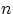
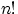
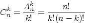

В данном разделе мы займёмся подсчётом числа «шансов». О числе шансов говорят, когда
возможно несколько результатов
какого-либо действия (извлечение карты из колоды, подбрасывание кубика или
монетки). Число шансов — это число способов проделать это действие или, что то же самое, число возможных
результатов
этого действия.
Пусть одно действие можно проделать пятью способами, а другое — двумя.
Каким числом способов можно проделать пару этих действий?
Теорема 1.
Пусть множество состоит из элементов: , а множество — из
элементов: .
Тогда можно образовать ровно пар , взяв
первый элемент из множества , а второй — из множества .
Доказательство. С элементом мы можем образовать пар:
.
Столько же пар можно составить с элементом , столько же — с элементом
и с любым другим из элементов множества .
Т.е. всего возможно пар, в которых первый элемент выбран из множества , а второй — из множества .
QED
Упражнение 1.
С помощью теоремы
1 доказать, что:
- а)
- при подбрасывании трёх монет возможно 2·2·2=8 различных результатов;
- б)
- бросая дважды игральную кость, получим 6·6=36 различных результатов;
- в)
- трёхзначных чисел бывает 9·10·10=900;
- г)
- трёхзначных чисел, все цифры которых различны, существует 9·9·8;
- д)
- чётных трёхзначных чисел возможно 9·10·5.
Есть урна (ящик), содержащая  пронумерованных объектов (шаров).
Мы выбираем из этой урны шаров; результатом выбора является набор из шаров.
Нас интересует, сколькими
способами можно выбрать шаров из ,
или сколько различных результатов может получиться.
На этот вопрос нельзя дать однозначный ответ, пока мы не определимся:
а) с тем, как организован выбор (можно ли шары
возвращать в урну), и б)
с тем, что понимается под различными результатами
выбора.
Рассмотрим следующие возможные способы выбора.
- 1.
- Выбор с возвращением: каждый вынутый шар возвращается
в урну, каждый следующий шар выбирается из полной урны.
В полученном наборе из номеров шаров могут
встречаться одни и те же номера.
- 2.
- Выбор без возвращения: вынутые шары в урну не
возвращаются, и в полученном наборе не могут
встречаться одни и те же номера.
Условимся, какие результаты выбора (наборы
из номеров шаров) мы будем
считать различными. Есть ровно две возможности.
- 1.
- Выбор с учётом порядка:
два набора номеров шаров считаются различными, если они
отличаются составом или порядком номеров.
Так, при выборе трёх шаров из урны, содержащей 5 шаров,
наборы (1, 5, 2), (2, 5, 1) и (4, 4, 5) различны, если
порядок учитывается.
- 2.
- Выбор без учёта порядка:
два набора номеров шаров считаются различными, если они
отличаются составом. Наборы, отличающиеся лишь порядком
следования номеров, считаются одинаковыми.
Так, наборы (1, 5, 2) и (2, 5, 1) не различаются и образуют один и тот же результат выбора, если порядок не
учитывается.
Подсчитаем, сколько возможно различных результатов
для каждой из четырёх схем выбора (выбор с возвращением или без,
и в каждом из этих случаев — с учётом порядка или без).
Упражнение 2.
Перечислить все возможные результаты в каждой из четырёх схем при выборе
двух шаров из четырёх.
Например, при выборе с возвращением
и без учёта порядка: (1, 1), (1, 2), (1, 3), (1, 4), (2, 2), (2, 3), (2, 4), (3, 3), (3, 4), (4, 4).
Пример; Сколькими способами можно посадить 4 пассажира на 10 мест в самолете.
Теорема 2. Общее количество различных наборов при выборе элементов из без возвращения и с учётом
порядка равняется
и называется
числом размещений из элементов по элементов.
Доказательство. Первый шар можно выбрать способами, его номер —
любой из возможных.
При любом выборе первого шара есть способ выбрать второй шар.
По
теореме 1, число возможных пар
равно . Для каждой такой пары есть способа
выбрать третий шар.
По теореме 1, число возможных троек
равно произведению числа пар и числа способов выбора третьего шара, т.е. равно
. Продолжая рассуждения, получим, что
общее число возможных наборов из шаров
равно .
В этом произведении сомножителей последний множитель есть
число способов выбора -го шара, когда уже выбраны предыдущие.
QED
Следствие 1.
Если в множестве элементов, то существует ровно 
перестановок
этих элементов.
Доказательство. Перестановка — результат выбора без возвращения
и с учётом порядка элементов
из . Поэтому общее число перестановок равно
QED
Упражнение 3.
Найти, сколько всего возможно различных результатов в следующих экспериментах:
- а)
- из колоды в 36 карт без возвращения, с учётом порядка вынимают три карты;
- б)
- Вася, Петя, Оля и Лена занимают какие-то четыре из десяти мест в классе;
- в)
- из русского алфавита выбирают четыре разные буквы и составляют слово;
- г)
- из различных цифр, не равных нулю, составляется трёхзначное число.
Сколькими способами из 100 митингующих школьников можно арестовать 10?
Теорема 3.
Общее количество различных наборов при выборе
элементов из без возвращения и без учёта
порядка равняется

и называется числом сочетаний из
элементов по
элементов.
Доказательство. Согласно
следствию 1,
различных номеров шаров можно
упорядочить способами.
Поэтому из каждого набора, выбранного без возвращения и без учёта порядка,
можно образовать наборов, отличающихся друг
от друга
порядком следования номеров. Т.е. при выборе без возвращения и с учётом порядка
возможно в раз больше наборов, чем при выборе
без учёта порядка.
Поэтому число наборов при выборе без учёта порядка равно
QED
Упражнение 4.
Найти, сколько всего возможно различных результатов в следующих экспериментах:
- а)
- из колоды в 36 карт без возвращения, без учёта порядка вынимают три карты;
- б)
- из русского алфавита выбрасывают четыре буквы.
Обозначается А с чертой n от k. В литературе чаще пишит формулу. Пример: сколько комбинаций на кодовом замке из 4 цифр.
Теорема 4.
Общее количество различных наборов при выборе элементов из
с возвращением и с учётом порядка равняется .
Доказательство.
Первый шар можно выбрать способами. При каждом из этих
способов второй шар можно выбрать также способами,
и так раз. Общее число наборов равно
.
QED
Упражнение 5.
Найти, сколько всего возможно различных результатов в следующих экспериментах:
- а)
- из колоды в 36 карт тянут три раза карту с учётом порядка и с возвращением;
- б)
- пятизначное число составляется из одних нечётных цифр;
- в)
- обезьяна напечатала на машинке слово из десяти букв.
Обозначается С с чертой n от k. Пример: Сколькими способами можно купить 20 пироженных 4 видов?
Рассмотрим урну с двумя пронумерованными шарами и перечислим результаты выбора двух
шариков из этой урны при выборе с возвращением.
| с учётом порядка |
без учёта порядка |
| (1,1) |
(1,1) |
| (2,2) |
(2,2) |
(1,2)
(2,1)
|
} (1,2)
|
Видим, что в схеме «без учёта порядка» получилось три различных
результата, в отличие от четырёх результатов в схеме «с учётом порядка».
Заметим также, что никаким делением на «число каких-нибудь перестановок»,
которое помогло избавиться от учёта порядка при выборе без возвращения,
число 3 из числа 4 получить не удастся.
Теорема 5.
Общее количество различных наборов при выборе элементов из
с возвращением и без учёта порядка равняется
Упражнение 6.
Проверить, что при и получается ровно 3.
Доказательство. Рассмотрим подробно, чем отличаются друг от друга два
разных результата такой схемы выбора.
Нам не важен порядок номеров, т.е. мы учитываем только,
сколько раз в нашем наборе из номеров шаров появился каждый номер.
Поэтому результат выбора можно представить набором
чисел , в котором
—
число появлений шара номер в наборе,
и .
Числа принимают значения из .
Два результата выбора в схеме выбора с возвращением и без учёта порядка
различаются,
если соответствующие им наборы не совпадают (порядок следования элементов учитывается).
Представим себе другой эксперимент, имеющий точно такие же результаты,
и посчитаем их количество.
Есть ящиков, в которых размещаются шаров. Нас
интересует только число шаров в каждом ящике.
Результатом эксперимента снова является набор
чисел , где равно числу шаров в ящике с номером
, и . Числа
принимают натуральные значения или равны нулю.
А теперь изобразим результат такого размещения в виде схемы, в которой
вертикальные линии обозначают перегородки между ящиками, а точки —
находящиеся в ящиках шары:
Мы видим результат размещения девяти шаров по семи ящикам. Первый ящик
содержит три шара, второй и шестой ящики пусты, третий ящик содержит один шар,
в четвёртом и пятом ящиках лежит по два шара.
Переложим один шар из первого ящика во второй и
изобразим таким же образом ещё два результата размещения:
Видим, что все размещения можно получить, меняя между собой шары и
перегородки, или расставляя шаров на местах.
Число получается так: у ящиков есть ровно перегородка,
считая крайние, но из них перемещать можно лишь внутреннюю перегородку.
Таким образом, имеется мест, которые
можно занять шарами либо внутренними перегородками. Перебрав все возможные
способы расставить шаров на этих местах
(заполняя оставшиеся места перегородками), переберем все нужные размещения.
Осталось заметить, что
способов расставить шаров на местах существует
Именно столько есть способов выбрать из
номеров мест номеров мест для шаров.
Упражнение 7.
- а)
- Найти количество способов разложить натуральное число в сумму
целых неотрицательных слагаемых, если важен порядок следования этих слагаемых.
- б)
- Найти число различных производных порядка функции
переменных.
- в)
- Найти число возможных результатов подбрасывания двух игральных костей, если
кости считаются неразличимыми. То же самое для трёх игральных костей.
N.Ch.